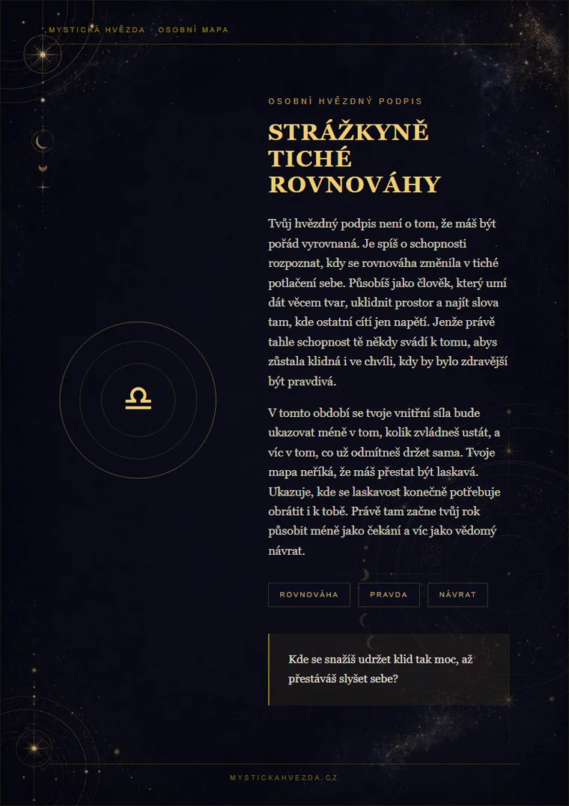
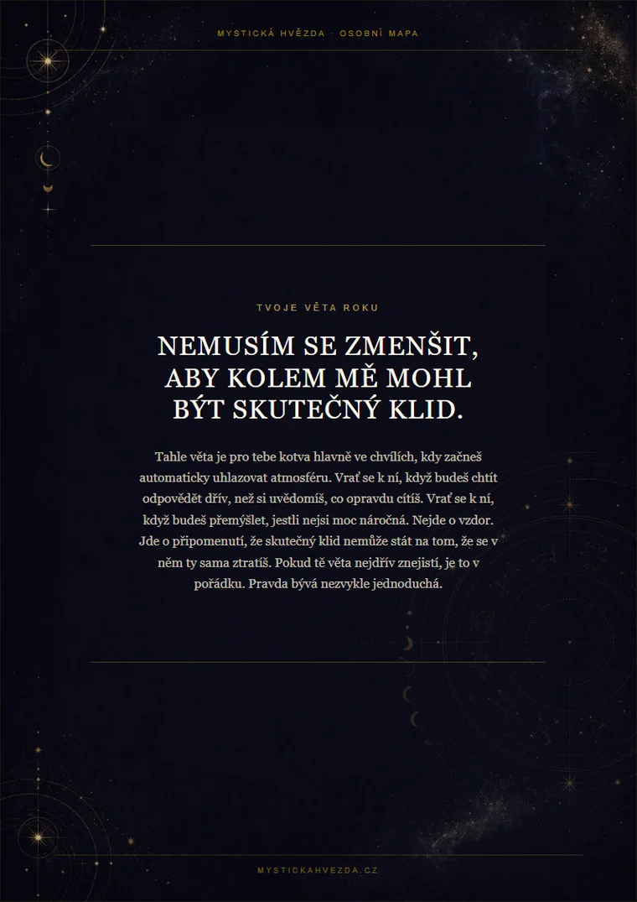
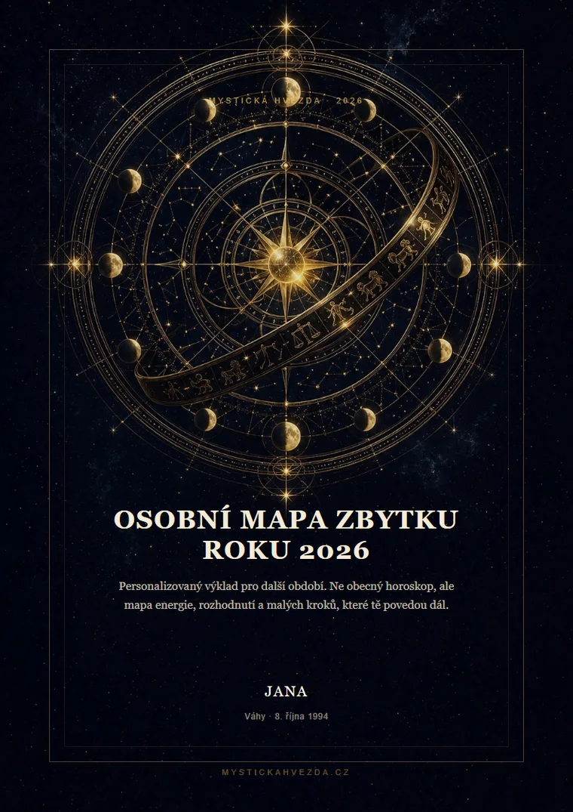
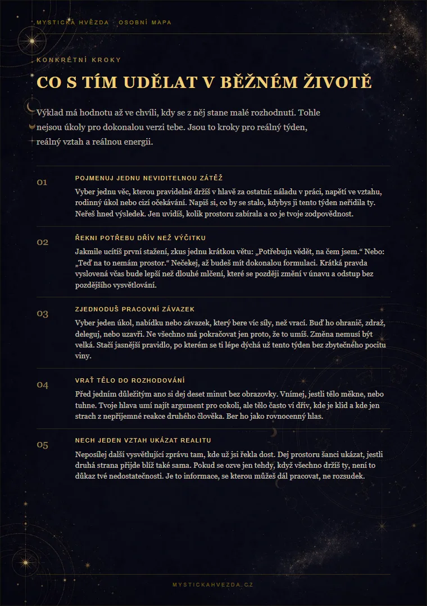
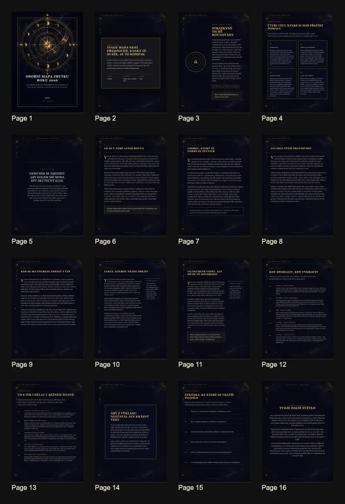

Slova pro to, co cítíš
Když něco dlouho nosíš v sobě, často tomu chybí název. Mapa ti může dát větu, u které si řekneš: ano, přesně tohle se děje.
Tvoje Osobní mapa se právě připravuje. PDF pošleme na e-mail během několika minut. Pokud nedorazí do 20 minut, zkontroluj složku hromadná pošta nebo spam.
Objednávka se neztratila. Můžeš se vrátit k formuláři a pokračovat, až budeš chtít.
Možná už víš, že se něco opakuje. Stejné rozhovory, stejná únava, stejný pocit, že navenek funguješ, ale uvnitř potřebuješ víc jasno.
Osobní mapa je 16stránkový PDF výklad, který ti pomůže pojmenovat, co se v tobě teď děje, kde si hlídat energii a kam dát pozornost ve zbytku roku. Získáš odstup, konkrétní otázky a menší kroky, které se dají vzít do běžného dne.
Nečekej věštbu typu „všechno bude skvělé“. Čekej text, který se ptá přesněji: co si už dlouho omlouváš, kde mlčíš moc dlouho a jaký malý krok může ulevit už teď.



Smysl Osobní mapy není ohromit tě mystickými větami. Má ti pomoct lépe rozumět vlastní situaci a udělat jeden rozumný krok, který nebude proti tobě.
Když něco dlouho nosíš v sobě, často tomu chybí název. Mapa ti může dát větu, u které si řekneš: ano, přesně tohle se děje.
Neřekne ti, co musíš udělat. Pomůže ti ale rozlišit, kde mluví strach, kde únava a kde už v sobě delší dobu znáš odpověď.
Uvidíš, kam dát pozornost ve vztazích, práci, energii a vnitřním růstu. Ne všechno najednou. To hlavní, co má teď váhu.
Některé odpovědi nevzniknou hned při čtení. Proto v mapě najdeš i otázky k zápisu, aby text pokračoval v běžném životě.
Spíš chceš na chvíli zastavit, podívat se na věci z odstupu a říct si pravdu bez toho, aby tě někdo tlačil do jednoho správného rozhodnutí.
Nemusíš psát dlouhý příběh. Stačí pojmenovat, co se vrací. Takhle mapa pracuje s konkrétním tématem, aniž by z něj dělala univerzální radu pro všechny.
„Pořád se vracím k jednomu vztahu. Není vyloženě špatný, ale mám pocit, že v něm ztrácím sebe a neumím si říct, jestli zůstat.“
Nezačne ti říkat, koho milovat nebo opustit. Podívá se na vzorec: kde ustupuješ, co si omlouváš, jak poznáš rozdíl mezi klidem a rezignací.
Jasnější otázky pro další týdny, období, kdy zpozornět, a malé kroky: rozhovor, hranici, zápis nebo pauzu, která ti vrátí vlastní hlas.
Na ukázkách vidíš, jak mapa působí jako celek: tmavý hvězdný vizuál, osobní kapitoly, delší texty a konkrétní kroky místo několika vět, které by mohly patřit komukoliv.

Mapa je postavená tak, aby tě nejdřív navedla k hlavnímu tématu, potom ho ukázala ve vztazích, práci a energii, a nakonec ho převedla do kroků.
Jméno, znamení a téma, se kterým do mapy vstupuješ.
První pojmenování energie, kterou teď neseš, a otázka pro celé období.
Co se opakuje, co chce dozrát a jaká věta tě může vracet zpátky k sobě.
Jak se hlavní téma ukazuje v běžném životě, ne jen v abstraktních symbolech.
Kdy zpozornět, kdy nezrychlovat a kdy může být dobré udělat jasnější krok.
Praktické kroky, bezpečný rituál, otázky k návratu a závěrečné poselství.
Úvodní část pojmenuje, jakou energii teď neseš, co tě drží nad vodou a kde už možná jedeš víc ze zvyku než z pravdy.
Ne slib, kdo přijde. Spíš pohled na to, kde ustupuješ, co říkáš mezi řádky a jak poznáš klid, který není jen dobře schované napětí.
Prakticky a bez velkých slibů: kde dáváš moc za málo, kde potřebuješ jasnější pravidla a co už nestojí za další odkládání.
Období, kdy se hlavní téma může ozvat hlasitěji. Kdy radši nezrychlovat, kdy říct věci napřímo a kdy si nechat víc prostoru.
Žádný velký restart života. Spíš malé kroky, které unesou i obyčejné dny: jeden rozhovor, jedna hranice, jedno rozhodnutí.
Krátký rituál bez velkého divadla a otázky k zápisu. Aby z mapy nebyl jen hezký text, ale něco, k čemu se vrátíš.
Proto neslibujeme jistoty, zázračné obraty ani jedno správné rozhodnutí. Osobní mapa není diagnóza, terapie ani finanční rada. Je to výklad pro sebereflexi: má pojmenovat vzorce, otázky a praktické kroky, které si potom ověříš ve vlastním životě.
Jméno, znamení, datum narození a tvoje otázka určují tón i zaměření výkladu. Jinak se čte vztah, který bolí, jinak práce, která bere sílu, a jinak únava, kterou už nejde přepsat výkonem.
Není to sbírka náhodných odstavců. Vede tě od hlavního tématu přes vztahy, práci a klíčové měsíce až ke krokům, které si můžeš vzít do běžného dne.
Dobrá mapa nemá rozhodovat za tebe. Má ti dát věty, u kterých se zastavíš, a otázky, které si vezmeš do běžného dne.
„Poznáš to ve chvíli, kdy už potřetí vysvětluješ něco, co druhý člověk mohl pochopit i bez dalšího vysvětlování. Tenhle rok tě vede k tomu, aby bylo jasnější, kde končí trpělivost a začíná opouštění sebe.“

Nemusíš psát román. Stačí jedna pravdivá věta: „nevím, jestli zůstat“, „práce mě vysává“, „bojím se změny“, nebo prostě to, co se pořád vrací.
Dostaneš přehledné PDF členěné na kapitoly. Můžeš ho přečíst najednou, nebo se vracet jen k části, která právě sedí.
Obvykle během 10 až 20 minut po platbě. Pokud nedorazí, napiš nám a dohledáme ho.
To, co napíšeš do formuláře, slouží k přípravě tvé mapy a doručení PDF na e-mail. Nezobrazuje se veřejně, není součástí profilu a údaje o kartě se na našem webu neukládají.
Koupíš si hlavně klidnější orientaci: co se opakuje, kde ztrácíš energii a jaký další krok dává smysl.
Získáš osobní výklad, který ti pomůže pojmenovat hlavní téma, podívat se na něj s odstupem a převést ho do menších kroků. Cílem není říct ti, co musíš udělat. Cílem je, aby se v tom dalo lépe dýchat a rozhodovat.
Nevadí. Nemusíš mít dokonalou otázku. Stačí napsat, co se vrací, co tě unavuje nebo kde cítíš největší tlak. Čím konkrétnější větu napíšeš, tím přesněji se mapa zaměří.
Obálka, úvodní zrcadlo, hvězdný podpis, hlavní téma, vztahy, práce a peníze, vnitřní růst, stín a dar, klíčové měsíce, konkrétní kroky, malý rituál, otázky k zápisu a závěrečné poselství.
Zadání slouží k přípravě tvé mapy a doručení PDF. Nezobrazuje se veřejně a není součástí profilu. Údaje o kartě zpracovává Stripe, na našem webu se neukládají.
Ne. Osobní mapa je jednorázový PDF výklad. Zaplatíš jednou a dostaneš ho do e-mailu.
Ano v tom smyslu, že pracuje s konkrétní kombinací jména, data narození, znamení, zvoleného oslovení a tématu, které napíšeš. Když zadáš jen „láska“, bude výklad širší. Když napíšeš, že nevíš, jestli zůstat ve vztahu, kde je klid, ale chybí blízkost, dostane přesnější směr.
Denní horoskop je krátký impuls. Osobní mapa je delší výklad pro celé období: pracuje s tvou otázkou, vrací se k hlavním vzorcům a dává ti konkrétní kapitoly, ke kterým se můžeš později vracet.
Nevadí. Čas a místo narození pomohou s atmosférou výkladu, ale nejsou povinné.
Obvykle během 10 až 20 minut po zaplacení. Pokud nepřijde, zkontroluj hromadnou poštu nebo spam.
Ber ho jako zrcadlo, ne jako rozsudek. U některých vět možná hned víš, o čem jsou. Jiné si sednou až později, až se něco v životě zopakuje. Pokud by byl problém technický nebo by PDF nedorazilo, napiš nám.
Ano. Vyplň údaje člověka, pro kterého se mapa tvoří, a e-mail, kam má PDF dorazit.